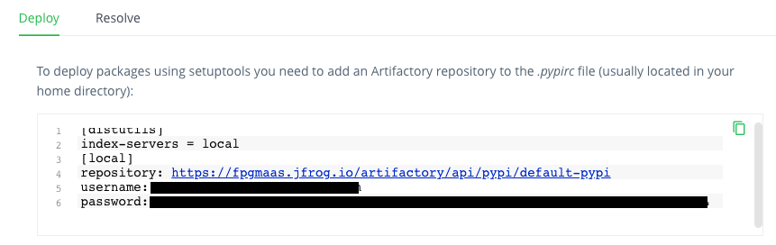

Publishing to Pypi or Artifactory¶
Releasing from Github¶
When publish_to is set to "pypi" or "artifactory", the
on-release-main.yml workflow publishes the code to
Pypi or Artifactory
respectively whenever a new release is made.
Before you can succesfully publish your project from the release workflow, you need to add some secrets to your github repository so they can be used as environment variables.
Set-up for Pypi¶
In order to publish to Pypi, the secret PYPI_TOKEN should be set in
your repository. In your Github repository, navigate to
Settings > Secrets > Actions and press New repository secret. As the
name of the secret, set PYPI_TOKEN. Then, in a new tab go to your
Pypi Account settings and select
Add API token. Copy and paste the token in the Value
field for the Github secret in your first tab, and you're all set!
Set-up for Artifactory¶
In order to release to Artifactory, visit your Artifactory
instance and open Quick setup. You should see something like this:

You should add these as secrets to your repository with the names
ARTIFACTORY_URL, ARTIFACTORY_USERNAME and ARTIFACTORY_PASSWORD
respectively. To do so, in your Github repository, navigate to
Settings > Secrets > Actions and create a secret by pressing
New repository secret to add the secrets one by one.
Publishing from your local machine¶
It is also possible to release locally, although it is not recommended. To do so, set the repository secrets listed in the sections above as environment variables on your local machine instead, and run
make build-and-publish